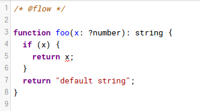
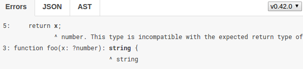

name: rkaneko-theme layout: true class: rkaneko-theme --- class: title-page # Flowtype First Steps ## #### March 28th, 2017 <span class="head-my-name"> <span class="head-my-name__icon"> </span> <span class="head-my-name__text"> Ryota Kaneko </span> </span> <span class="head-github-name"> <span class="head-github-name__icon"> <i class="fa fa-github fa-2x"></i> </span> <span class="head-github-name__text"> rkaneko </span> </span> --- # Agenda 0. What's Flowtype? 0. Getting started Flowtype 0. Basics 0. ~~In practice~~ (WIP) --- class: paragraph-page # What's Flowtype? --- # What's Flowtype? #### https://github.com/facebook/flow #### Opt-in static type checker for JavaScript - 既存コードに漸近的にflowのsyntaxを追加していける - OCaml実装 #### Type inference - 暗黙的な型変換によるバグチェック - null, undefinedな可能性のある値のチェック #### Idiomatic JS - 型定義を書かないJSのコードスタイルの意味を出来る限り理解するようにデザインされている - any typeを利用して型チェックをオプトアウトさせるという選択もある - Facebook製ということもあり、React.jsとの親和性も考慮されている模様 --- # Ecosystems #### flow-bin - https://github.com/flowtype/flow-bin - Binary wrapper for Flow - npm ecosystemではこのCLIを利用して型チェックを実行する #### flow-typed - https://github.com/flowtype/flow-typed - 3rd party libsの型定義ファイルのレポジトリ - flow-type CLIではpackage.jsonを見てプロジェクトに必要な型定義ファイルを管理する --- # Ecosystems #### flow-remove-types - https://github.com/flowtype/flow-remove-types - Flowのtype annotationsをJSファイルから削除する - babel-plugin-transform-flow-strip-typesのようにbabelのbuild pipelineの中でtype annotationsを削除するものもある - https://github.com/babel/babel/tree/master/packages/babel-plugin-transform-flow-strip-types #### Editors support - VS code, Vim, Emacs .center[.reference[Reference: [github.com/flowtype](https://github.com/flowtype)]] --- # Ecosystems #### Try Flow - https://flow.org/try/ .center[] .center[] --- class: paragraph-page # Getting started Flowtype --- ### Getting started #### Prerequisites - node v6 - npm v4 #### packages - flow-bin v0.42.0 ```bash # In some project directory $ npm init -f $ npm i -D flow-bin flow-remove-types ``` --- class: paragraph-page # Basics --- # Primitive Types #### Booleans ```js (true: boolean); (false: boolean); ('blahblah': boolean); // Error (undefined: boolean); // Error (null: boolean); // Error (0: boolean); // Error ``` --- # Primitive Types #### Booleans ```js function reverse(flag: boolean): boolean { return !flag; } reverse(true); reverse(false); reverse('text'); // Error reverse(0); // Error reverse(Boolean(0)); ``` - https://flow.org/try/#0PQKgBAAgZgNg9gdzCYAoVAKALgJwK4CmAXGAEZxwwECGAdgJQDcmU1MAzsWRVXU5gCJSMagAthYgSXKUaDRmDDBgYAKI4ccHJjy0AJgSgBLWgT3SecpouVqNWzLTwwYF2XwVKV6zdowAGN155G297bVQoXQBjLCM4WjAcAgA3AhxODFhqAHMgq3y6MABvVEVkrDwcRIBCbJzmAF90ZLSMgmx8An5W9MzWDm7mXvaMASwCAA8sAWsvO19UEcz-OdsfB2WOgCFLOgD6JiA --- # Primitive Types #### Numbers ```js (256: number); (3.14: number); (NaN: number); (Infinity: number); ('3.14': number); // Error ``` - https://flow.org/try/#0PQKgBAAgZgNg9gdzCYAoVAKATAVgGwBcYAdgK4C2ARgKYBOAlANyYDMAdAIwAsRZVdTTADkAhkN4UaDZhgCSxKAEtiigC4BPCf2mYARO266tUpmDDBgYAKK1acWkA --- # Primitive Types #### Strings ```js ('blahblah': string); ('true': string); ('': string); const text1: string = undefined; // Error const text2: string = 1; // Error const text3: string = true; // Error const text4: string = {}; // Error '' + String(false); '' + JSON.stringify({}); ``` - https://flow.org/try/#0BQcgRgNghgFpsgFwAIDOAXATgSwHYHMBKAbgChQsBXAUyTSzyLNDoxwJNIGMB7XDZOmoAPdAEYUbRsgC8ySrgAm1AGZ5qi4smQB6HcgCimTD0zc+AoaIBMkhgVnIxW3fqMmzvfukEj0AZjt2fEcqahc9Q2NTc29fUQAWIOk5AG8AXwi3aLMQEGQAamQAZXt8YBUoCFRqTjzC5AApYoB5ADkAOikCbBUAT2AMkiA --- # Primitive Types - `null`と`undefined`は区別される #### null ```js function acceptsNull(v: null) { console.log(v); } acceptsNull(null); acceptsNull(undefined); // Error ``` #### void ```js function acceptsUndefined(v: void) { console.log(v); } acceptsUndefined(undefined); acceptsUndefined(null); // Error ``` - https://flow.org/try/#0PQKgBAAgZgNg9gdzCYAoVUCuA7AxgFwEs5swBDXXAUwAd8BnAOUxhgAoA3ALjGxZgCUYAN6owYXCXpwYVAHTwA5pwEBuVAF90FanSb82fVmtQ7aDZqzY4AJlSiFsVG2vHBgYAKIAnb3G-oWHhEJOSU5vQAqth2Dk42nDwccIQuIuIZmVnZObl5+QWFRcX5YhJSMvJKKupapuF60bGOztYx9i0u6maN7XGtRoKqbh4+fgFAA --- # Primitive Types #### Maybe types - Maybe typesは`null`と`undefined`どちらも受け入れる ```js function acceptsMaybe(v: ?string) { console.log(v); } acceptsMaybe('text'); acceptsMaybe(null); acceptsMaybe(undefined); acceptsMaybe(); ``` - https://flow.org/try/#0PQKgBAAgZgNg9gdzCYAoVUCuA7AxgFwEs5swBDXXAUwAd8BnAWTIE8AjKgCgDcAuMAPz18AJ0LYA5gEowAb1RgwuEvTgwqAOngSeUgNyoAvugrU6TVh04ByfFQAe+a-sWu37j56-efvv-4DAn1RTWgZmdi5sTBgYfRDKMItIzhwAEyoocSo0+NDzCKt9IA --- # Primitive Types #### Optional - `void`と「省略」は受け入れる - `null`は受け入れない ```js // Optional object properties ({foo: 'bar'}: {foo?: string}); ({foo: undefined}: {foo?: string}); ({}: {foo?: string}); ({foo: null}: {foo?: string}); // Error ``` - https://flow.org/try/#0PQKgBAAgZgNg9gdzCYAoVxhgPIAcAuAlnAHYCGMYcARgFYCmAxvmLgE5y71tH0DOqABQBvKHDgAuMAHJqZNtIC+U0eID8UvvjaESAc0UBKANxDVksAFcSAE3pRd9G8rDmNYLTv1HTIl281tXQMTMzELEksYGH9w909gnzAwTDAAUTYONiA ```js // Optional function parameters function acceptsOptionalString(v?: string) { console.log(v; } acceptsOptionalString('text'); acceptsOptionalString(undefined); acceptsOptionalString(); acceptsOptionalString(null); // Error ``` - https://flow.org/try/#0PQKgBAAgZgNg9gdzCYAoVxhgPIAcAuAlnAHYCGMYUAriQMZGli5kBOZAtgKb5esDOqGvUYkwZOnS4F+eURQDK+VoRIBzABQA3APwAuMP2Wq1ASjABvVGDB1S-ODC4A6eJq2mA3KgC+6CVIycsTkMEoq6hoA5LwAHvhRXqgB0viyBCGKxpG0ACZcUKpcuUkpQRmkWRGapZKp6fJh2Zok1DAwXjaYYACirKxwrGBAA --- # Primitive Types #### Default parameters [ES2015 default function parameters](http://www.ecma-international.org/ecma-262/6.0/#sec-functiondeclarationinstantiation)に型定義をつけると - `void`と「省略」は受け入れる - `null`は受け入れない ```js function acceptsOptString(v: string = 'bar') { console.log(v); } acceptsOptString('foo'); acceptsOptString(undefined); acceptsOptString(); acceptsOptString(null); // Error ``` - https://flow.org/try/#0PQKgBAAgZgNg9gdzCYAoVUCuA7AxgFwEs5swBDXXAUwAd8BnAeToGV8AnQ7AcwAoA3AFxh6HLtzABeMAHIARmXYyAlGADeqMGFwl6cGFQB08Pv2UBuVAF90FanSasxPXjKhw4Ky3doNm+Nk4XHAATKiguKhCLVB8Hf0DxXhi4vycgvmxMGBgLLWBgMABRdnY4djAgA --- # Literal Types - literal valueを型として使用できる ```js function acceptsTwo(v: 2) { console.log(v); } acceptsTwo(2); acceptsTwo(3); // Error ``` - https://flow.org/try/#0PQKgBAAgZgNg9gdzCYAoVUCuA7AxgFwEs5swBDXXAUwAd8BnAFQTgAoA3ALjACYBKMAG9UYMLhL04MKgDp4Acw58A3KgC+6CtTpMWrfqq20GzNgGYVo4MDABRAE7249oA --- # Literal Types - enumのようにも使える ```js function wizard(color: 'RED' | 'BLUE' | 'GREEN' | 'YELLOW'): string { if (color === 'RED') { return 'fire'; } else if (color === 'BLUE') { return 'water'; } else if (color === 'GREEN') { return 'hurricane'; } else if (color === 'YELLOW') { return 'land'; } throw new Error(); } wizard('RED'); wizard('BLUE'); wizard('GREEN'); wizard('YELLOW'); wizard('INFINITY'); // Error ``` - https://flow.org/try/#0PQKgBAAgZgNg9gdzCYAoVUCuA7AxgFwEs5swFCAvAQwCcATAClznhoC4wByAJQFEARTmAA+XAEIAZAKq8hozgHE+vAHJyuATV4SJAeQDqnAJQcAzvhqFsAczABvVGDCEoYJizg0wAXl9c+gkb2jk5gNACm+Jg0pJxQhBGcANwhAL5g4TCm4c6u7qw+fpySMsbBoWGR0bEIVPjhNMlpGVk5Lm7MBb7eXEq8qmUOFRFRMVwAFtGWuFTY4U1O6ZnZuR0eXt2a2nqGQUOhI9VcMLN0C2CpIf --- # Mixed Types #### A group of different possible types ```js function stringify(v: string | number | boolean) { return '' + String(v); } stringify('blah'); stringify(2); stringify(true); ``` - https://flow.org/try/#0PQKgBAAgZgNg9gdzCYAoVUCuA7AxgFwEs5swBnfAJ0OwHNCoBPACgDcAucqm2sAHzDZMAWwBGAU0r8wouHBjiAhtgCUYAN6owYSuPyZKpAORGwAajABlbnTYqA3KgC+6CtToMWR0TEUALIwdUNx5PZgAmIJCPJmYqTHEHIA --- # Mixed Types - 未定義の型を指定すると,any typeとして動作する - `mixed`以外も使えるがこの用途では`mixed`を使うべき(should) ```js function getTypeOf(v: mixed): string { return typeof v; } getTypeOf('blah'); getTypeOf(1); getTypeOf({}); ``` - https://flow.org/try/#0PQKgBAAgZgNg9gdzCYAoVUCuA7AxgFwEs5swBzAU3wBUBPABwoHkoAKANwC4wBbQgDwoATAJTcAzvgBOhbGTABvVGDBSqmKaXwMKcKGHYBuVAF90lGjpasA5ACMYAQwAWNkcYt1G1gIzvUnlZsCibuYEA --- # Mixed Types - 次はError ```js function stringify1(v: mixed): string { return '' + v; // Error } ``` - [Type refinements](https://flow.org/en/docs/lang/refinements/)を行って、stringの`+` operatorのoperand2として取れる型を確定させる ```js function stringify2(v: mixed): string { if (typeof v === 'string') { return '' + v; } return ''; } ``` - https://flow.org/try/#0PQKgBAAgZgNg9gdzCYAoVUCuA7AxgFwEs5swBnfAJ0OwHNCoBPARgAoA3ALjAFtCAPAKYATAJTcK1OmADeqMGEqD8mSqQDk6sAGow7ANwLgwMAFFKlOJVQBfeQoeOnzl67fuPnr95+-vGHAJiUkkaeiYAJg5uPiExCSow2XsGMFZ8RgAHQTgoPTAAXiKwdVC6dVFkxyUVNRKtXQN7OwUa1Q11fVsgA --- # Any Types - type checkerの使用をopt-outさせたい場合に使う - .color-red[**出来る限り使うのは避けるべき**] - mixed typesとして使わないように注意 - 使う場合にも関数の戻り値などにanyを使用してanyがleakすることがないようにする ```js function add(one: any, two: any): number { return one + two; } add(1, 2); add('1', '2'); add({}, []); ``` - https://flow.org/try/#0PQKgBAAgZgNg9gdzCYAoVUCuA7AxgFwEs5swBDAEwoAoSBTALnOwE8AaMfBOJs1gSibZMAWwBGdAE5gA3qjBhJdfJkml6YANSduAblQBfdJRoBGDgCZ+usKhPUA5KYccHFh9btVqMgxwDaALrWYEA #### Use cases - 既存コードにflowを導入しているときに優先度が低い型 - flowが正しくチェックできないコードに対して --- # Type refinements #### Maybe types ```js function add(one: any, two: any): number { return one + two; } add(1, 2); add('1', '2'); add({}, []); ``` - https://flow.org/try/#0PQKgBAAgZgNg9gdzCYAoVUCuA7AxgFwEs5swwBDbAT3wAtDsBzAURgGcBTAOUwFsAVWgCdEACgBuALjAB+bHwBGHIQEpp83kqFgA3qjKEoYCWAC85sPJgwwAH1th8VAA4c4R8WYsByHABMOKAYOP28VXTJIqOiY2Lj4hMSk5OT9SLoRJGwOJGYhESFRFQBuNIBfNKEOfEwhUnFSsqA --- # Variable Types - `var`, `let`: 再代入可 - `const`: 再代入不可 ```js var num = 1; num = 2; num = 'text'; let bool = true; bool = false; bool = 'text'; const str = 'text'; str = 'hoge'; // Error str = true; // Error let v1: number = 1; v1 = true; // Error let v2: number | boolean = 1; v2 = true; ``` - https://flow.org/try/#0PQKgBAAgZgNg9gdzCYAoVA3AhgJzAOwFcBbMAXjAEYBuVI0igJlvvLAHIAXAUwA9P2tVDG6cwAIzhwYbTjkLdak6WyhYYAZ0WplMilz4ChAYzj4NYi3n09+g1FbbsAFnADm3QWDDBgYAKI4OHA4DnKy8orevgFBIaje3sKiYBiUAFwEJOLc1lS0aREK1NF+gcGhiWDJYhiMmfQ5eAA+ElIiWPhsNJiMRYpAA --- # Function Types ```js function blah(str: string, ...rest: Array<number>): string { return str + rest.join(''); } const arrowFunc = (text: string, flag: boolean): void => { console.log(text + String(flag)); } function acceptsArbitaryFunc(func: () => mixed): void { func(); } let someHandler: Event => void; ``` - https://flow.org/try/#0PQKgBAAgZgNg9gdzCYAoVUCuA7AxgFwEs5swAjGAQwAsAKAZ3wCcAuMRpw7AcwBowAdEKYBTRmwCCTJpQCeAHmyYAtmRFMAfAEo2HLtzABvMCdNnzFy1es3bdu6hOj8mJqQ5gA1GFGMBAKzguWgByEK0AblQAX3RcEkYwSmlEADEcXDAAXjBafBEAD3xdZn1+WEpuNjI4OBgRSmwdMAA3IIATbI0jRzB47Ho6kQF4bjzC-C8wAGVSnloK7i1ImPQsPCISJNxcEQAHfHopMkJ8ZNl0vAWMtlotLrBlQgKRdua2wk7DXvXcO6jYqh6pNBsoRAAJRrteqsMAAURaImwkyy3Q+7QiQA --- # Object Types ```js const obj1: {foo: boolean, bar: number} = {foo: true, bar: 256}; const obj2: {foo: boolean, bar: number} = {foo: false}; // Error let obj3: {foo: boolean, bar: number} = {foo: true}; // Error ``` - https://flow.org/try/#0PQKgBAAgZgNg9gdzCYAoVBjOA7AzgFzDgCMArARgC4wBvKOOa4hmAUwENsAaMY9gJ2rYArgFtirfgF8wAXlr1GYfP2GsefQWABMAVgBsUgNyYcBImW3U6DJiw7deAoWInS5C22CjsYuVsZgYMDAYACi-Pxw-OhshCSkAMzWinZwbJwazmAi4pIy8jZKKmqBwaERUfxAA --- # Object Types #### Optional object type properties - 存在しないプロパティは`undefined` - flowではオブジェクトの存在しないプロパティへのアクセスはエラーとなる ```js const obj1 = {foo: 'text'}; obj1.bar; // Error ``` - https://flow.org/try/#0PQKgBAAgZgNg9gdzCYAoVBjOA7AzgFzDgCMArARjAF4wBvKOOALjAHJ8BTAD31YF8A3KhIUAdMQCGAJwFgwwYGACiUqXClA ```js const obj1: {foo?: string} = {foo: 'text'}; const obj2: {foo?: string} = {foo: undefined}; const obj3: {foo?: string} = {}; const obj4: {foo?: string} = {foo: null}; // Error ``` - https://flow.org/try/#0PQKgBAAgZgNg9gdzCYAoVBjOA7AzgFzDgCMArARgC4wBvKOOAfmoICcBLbAcwF8wBeWvTjUA5PgCmAD3yieAbkw4CRMgCZqdBszBtOvAUIbUArtgAmEqJwnmFSvIRKkAzJuE693PoJr2sjqqkACzu2iz4HN6GWiJg2CYwMApgYMDAYACirKxwrEA --- # Object Types #### Sealed objects - property値と一緒に生成するobjectのこと - 定義されたpropertyとその値の型をすべて知っているobject - 新しいpropertyへの値セットはできない ```js const obj1 = { foo: 1, bar: true, baz: 'three' }; const foo: number = obj1.foo; const baz: null = obj1.baz; // Error const bar: number = obj1.bar; // Error // set a new property is error obj1.add = false; // Error ``` - https://flow.org/try/#0PQKgBAAgZgNg9gdzCYAoVBjOA7AzgFzDgCMArARjAF4wBvVMMKOOALjHIBoGxiBDAE7t8AgK4BTbo34AvdgHJ8ACwHjx81AF8A3Oix5CzNmGyiAtsXEDqRMuQB0R3foK8+ck6JgwbJCvdltRmBgMABRAQE4AUwcV34hTwsrXzsAwSCwEPDI6PRs1T5cXABLAHNsVD8HPgATWpsoPhhccW0gA --- # Object Types #### Unsealed objects - flowではpropertyが何もないobjectを生成すると、そのobjectはUnsealed objectsと呼ばれる - Sealed objectと異なり、property追加を許容する - 未定義のpropertyへのアクセスはv0.42.0の段階ではerrorにならないが将来改善されるかも ```Js const obj1 = {}; obj1.foo = 1; obj1.bar = true; // reassign obj1.foo = 'reassign'; const foo: string = obj1.foo; const bar: number = obj1.bar; // Error // unsafe behavior const blah: string = obj1.blah; ``` - https://flow.org/try/#0PQKgBAAgZgNg9gdzCYAoVBjOA7AzgFzDgCMArARjAF4wBvAXwG50SKA6KOOasc518m2IBDAE498ogK4BTZqmDAwomcNy4AlgHNsqARy48A5CrWadR5ljyFOcAFxgCojdi099dqzgJgRox2wpAFtiGXEafX9GMDBFMABRUVE4UXR4qTxhKBkAGj8pQnwACw1cPxli4QA3DVSwYOEATwqwDWCABxTqmQATNuwwEpkwKEKpFUwfQmIYYWLHZ1d3DzJBWfnGIA --- # Object Types #### Exact object typess - 指定されたpropertyの集合で構成されるobjectのみを強要したい場合に使う - [Width Subtyping](https://flow.org/en/docs/lang/width-subtyping/)という仕組み ```js function exact(obj1: {|foo: string, bar: number|}): void { obj1.bar++; console.log(obj1.foo); } function normal(obj1: {foo: string, bar: number}): void { obj1.bar++; console.log(obj1.foo); } exact({foo: 'text', bar: 256}); exact({foo: 'text'}); // Error exact({foo: 'text', bar: 256, blah: true}); // Error normal({foo: 'text', bar: 256}); normal({foo: 'text'}); // Error normal({foo: 'text', bar: 256, blah: true}); ``` - https://flow.org/try/#0PQKgBAAgZgNg9gdzCYAoVUCuA7AxgFwEs5swBTADwEMCAKOAIwCsBGALjAG8AfKOODgGd8AJ0LYA5gBowDKiI7ZMAWwZkR3AL4BKDgDc4hACZdUYMI1YA6OSIDUdgNxmwuEoLgwyV+BPrMWKz44bWdNdCw8IhIwbDgRZSoYf1YOTmChUXFpWXlFFTURHX1DE04XS0DbB2dzN2wPLx84P0qg-lDUcNRKGnxadP4OAHJ8SnxhmVsOACYAVgA2HWdeukGBMFHx4eXzYGAwAFEREXie6jWMzbGKCam8sHmFqZgqAAsOUUwyXbB9o5OZziCSSAyuW1uk1yCkei2WqGBiWS6xGNwmv3+x1OIgR8SRYKG1229xhTxe70+Im+yyAA --- # Object Types #### Objects as maps - objectをMapとして使うのはそもそも良くない - ES2015 [Map](http://www.ecma-international.org/ecma-262/6.0/#sec-map-constructor) - とはいってもlibraryの規約等で使わざるを得ないケースもある - Indexer propertiesとnamed propertiesはmixすることもできる ```js const obj: {[someKey: number]: string} = {}; obj[1] = 'Red'; obj[2] = 'Blue'; obj[true] = 'Green'; // Error // mix indexer properties and named properties const forms: { quantity: number, [name: string]: string } = { quantity: 5 }; forms['itemId'] = 'some-id'; ``` - https://flow.org/try/#0PQKgBAAgZgNg9gdzCYAoVBjOA7AzgFzDgCMArALjAG8BtXOAWwFMBpJgT0uwFcHimATgF1KBAQEtsAcwC+YALzUZAblQlSNAIxCFYAOQAlJgBM9q9TQBMOxXoBCMbkzNqyNfAKc39AcQFMmbDMwMGBgMABRAQE4AXQwsAZxAA8wSWMmZMEwAAcYnMF8cSZcMABDbGMwbDLmKry4AoEikswcAjAoWIZcSipUEIBHbgqi-E5q3n4BABoBsBoa5lEPSSkRMDE11DlFfqGR7DGJgFYd1S6BHpo9cXwmBgBJU289emYAWnFTZSA --- # Array Types - JavaScriptではArrayはTupleとしても使用される - flowでは明確に区別される - indexアクセスは安全ではない ```js const arr1: Array<number> = [1, 2, 3]; const arr2: ?Array<number> = [1, 2]; const arr3: ?Array<number> = null; const arr4: ?Array<number> = [null]; // Error arr1[4]; // Works ``` - https://flow.org/try/#0PQKgBAAgZgNg9gdzCYAoVBjOA7AzgFzAEMAnEgRgC4wBBMogTwB5sBXAWwCMBTEgPjABeMAG1yAGjAAmSQGYAugG5MOAsTJTqAfjolGLDj35DRE6UpV5CpErO279bLrwHC2MGMqxX1JACz29MxORq6i7jBKYGDAwGAAomRwJOg25CJ+UTFxAOrJANa4QA --- # Tuple Types - JavaScriptでは配列を用いて表現される - flowではtuple同士は同じ長さもののみ一致する - flowではtupleはArrayと一致しない - tupleではtuple自身をmutateするArray.protptype methodsは使えない ```js const tuple: [string, number, boolean] = ['text', 256, true]; let text: string = tuple[0]; let str: string = tuple[2]; // Error // destructuring const [blah: string, , bool: boolean] = tuple; // Works same length tuples const tuple1: [number, boolean] = [256, true]; const tuple2: [number] = tuple1; // Error // Array.prototype tuple1.join(','); // Works tuple1.push('text'); // Error ``` - https://flow.org/try/#0PQKgBAAgZgNg9gdzCYAoVBjOA7AzgFzHwFcAHGAUwC4wBtAgJwEtsBzAGjG2IFsAjCg0584cSgENsAXTABeOgHJ8FAB74FnAEwBWAGyd8DYhSkBuVJULK1NRi1ZyiZSrQAMZixUKNbh+45JyClpNMzAwYGAwAFEGBjgGVEiwABMKRmIMEmY2TBwCOj4YcQALXxyOMGFRGBoRMQpJGXlAynNkgHUEgGtcMFxxHgowSjZ8Eqcg3Dy8K2cKAEYaWm5+QWqGpscQvQMjE3MsWcnKTWXVgQZmk8XTcOTY+MTkgEE48QBPADpSePw4fAfUgUVCtRZfABWcBYAAoNAoAJR3CJRLoMXqg+YLH7EXAlOHWdRI+5RR4JIA --- # Class Types ```js class Person { age: number; constructor(age: number) { this.age = age; } sing(): void { console.log('blahblah'); } } const p1: Person = new Person(30); const arr: Array<Person> = [p1]; ``` - https://flow.org/try/#0PQKgBAAgZgNg9gdzCYAoVBjGBDAzrsABQFMAnXOAOzAG9UwxsBzYgLjEoFcBbAIzIDc9MBiq4ALqU4ZxcUgApmbDj36kAlLWENxACwCWuAHRKwAXkYshDAL7Dc+yk3nr2ANzj6AJloYNRlBQwxEbwzgDkvDi6Udi64erWYHZ2mGLiYAAOAIzsJORU5hzESPkUlPIAzAAMiWmBGdikpOwAgs3YAJ4APGVUAHxFANo5ALoCQA --- # Class Types #### Class Generics ```js class Port<Input, Output> { constructor(input: Input, output: Output) { } } ``` - https://flow.org/try/#0PQKgBAAgZgNg9gdzCYAoVBjGBDAzrsABTgCcAXAHgEkA7ABwFcyAaMAeScbID4wBvVGDAY4NXGRIMMZUgAoAlvSYAuMLS6s4nFe21kAlPzCCwAX1SmgA --- # Type Aliases - 複雑な型を複数箇所で使いまわしたいときなど ```js type Contact = { state: string, city: string, tel: string, email: string, }; const contact: Contact = { state: 'New York', city: 'blahblah', tel: '090-1234-xxxx', email: 'rkaneko@example.com' }; ``` --- # Interface Types ```js interface Serializable { serialize(): string; } class Animal { serialize(): string { return 'Animal'; } } class Food { serialize(): string { return 'Food'; } } const animal: Serializable = new Animal(); const food: Serializable = new Food(); ``` - https://flow.org/try/#0PQKgBAAgZgNg9gdzCYAoVBLAdgFwKYBOUAhgMZ5gDKhGxMGAXsQEYwUDeqYYAzjXYzwAKAJQAuXjgLYA5gG5UAX3SkYxHjzABBLBgC2dMJ259pAhsPGTpWGUa7cwBPDgCuBLGADkO-XS8K3MrKquqaAGJwcAAm9ib89BaiEjxSsnGOzm4e3pExAQ7BKnBYqWDEugYwEtRmiSxsYAC8YFh4SL5VogqkJWVQUdE1CYwNFC1tSHnR3UA --- # Interface Types - Interfaceのpropertyはdefaultで[invariant](https://flow.org/en/docs/lang/variance/#toc-invariance) - modifierをつけることでcovariant (read-only)やcontravariant (write-only)に変更できる ```js interface Invariant {property: string} interface Covariant {+readOnly: string} interface Contravariant {-writeOnly: string} function blah1(v: Invariant) { v.property; v.property = 'foo'; } function blah2(v: Covariant) { v.readOnly; v.readOnly = 'bar'; // Error } function blah3(v: Contravariant) { v.writeOnly; // Error v.writeOnly = 'foo'; } ``` - https://flow.org/try/#0PQKgBAAgZgNg9gdzCYAoVBLAdgFwKYBOUAhgMZ5gCSWAbsQRsbmAN4AOBcbhOAngFxgAzjgZYA5gF9MuQiXJgAwnDoMmOVgGoCeYgBMA8lhgDho7FJn4iZCstwFiqxsxYBaBA3xGTgkWMtUKABXLFIcDDgsMAAjGGIACwBGAAoaQWpndQBKVlQwMBoAOg4uHl4AbnzCks5uAj4wAF4wAHIoODhWqukg0PDI6LjEgCY0wWUs3FyWauKdfR9KuaKFw2NeZraY+m6C4GAwAFECTgJUXpCwiKjY+ISAZnGlKNEnehccGZXPDG8Nir7Q4nM4-Lx4JZbdqdboXIA --- # Generic Types - see: https://flow.org/en/docs/types/generics/ --- # Union Types - 集合における一つの型を表す - enumのようにも使える ```js type Action1 = {| type: 'ACTION1', payload: {|id: string|} |}; type Action2 = {| type: 'ACTION2', payload: {|quantity: number|} |}; type Action = Action1 | Action2; ``` --- # Unions Types - disjoint unionsはある一つのpropertyを見てそれぞれのobjectの型を識別できる - Fluxだとreducerにおけるaction typeの識別するといったユースケースがある ```js type State = { id: string, quantity: number }; function reducer(state: State, action: Action): State { if (action.type === 'ACTION1') { const {id} = action.payload; return Object.assign({}, state, {id}); } else if (action.type === 'ACTION2') { const {quantity} = action.payload; return Object.assign({}, state, {quantity}); } return state; } ``` - https://flow.org/try/#0PQKgBAAgZgNg9gdzCYAoVAXAngBwKZgCCAxhgJZwB2AjGALxgDeAPqmGNvgFxgDkhAYQAqASQDyAOWq8ANGzA4AhlniKAJjxZkNYAM4YATmUoBzZgF9UFgNyZcBEuSoAmek1btOeHv2HiJzrLySipw6prMAI4AroqU5Ng8lNEAtgBGeAYWVua2XkSkFJRujkW0zAVOlM559mAAyhiKGAQMjPLaPPpGpnLsMXEJWEmpGQaouahQ0ZSFVGAGeGrRxJkAFPrN3g1NLTJginOUPKVUAJQ8jVtMHVBga4dVAHT5dG98gqKS0mc37OzEKj6JjacxuR5FJ4hVRqWz-BZ4DDRAzFMRpABWeFIT0Uul0ZBMlDWjHM+02exBanMZzhYDBeBgugIZDuDyOLzqbwYvi+AV4v3a8MBlGBjAG8TI2DBDAhVChyhhtLAAEhFkiUWA0Zjsbj8YTiaS9Ls8PsxbEJVKaWB5JZ2GrkcVyXhbOYgA --- # Intersection Types - 集合におけるすべて型の積集合を表す型 - 列挙したobject型を全て組み合わせたobject型を表現したいといったユースケース - 実行時に生成不可能なIntersection型は作れない - e.g. `number & string` ```js type A = {a: string}; type B = {b: number}; type C = {c: boolean}; function acceptIntersection(obj: A & B & C): void { console.dir(obj); } acceptIntersection({a: 'text'}); // Error acceptIntersection({a: 'text', b: 256}); // Error acceptIntersection({a: 'text', b: 256, c: true}); ``` - https://flow.org/try/#0PQKgBAAgZgNg9gdzCYAoVAXAngBwKZgCCYAvGAN4CGAXGAM4YBOAlgHYDmAvgNya4EAhUhQBGtVgFcAtiLyMeffGADCw8gGNaIuHBh5KrBaigTW6jMziswlderw4MASVYY5dPOcusAFHBEAVrTEAGRgQmHKAJS0AG5wzAAmFKhgYOpWdLp4AHSJzIx+gVG8nOi29o4uboweXlY+VLQA5G4AHhjNnCVpwMBgAKKMjHCMqBUOzq7unhYNTWCteB3NADRgYmAATACsAGzd3L39QyNjE1XTtbPejTSL7Z3rm7t765pgTBJ4h0A --- # Typeof Types - JavaScriptのtypeofより強力なもの ```js let num1 = 256; let num2: typeof num1 = 128; let num3: typeof num1 = 'text'; // Error let obj1 = {foo: 1, bar: 'text'}; let obj2: typeof obj1 = {foo: 1, bar: 'text'}; let obj3: typeof obj1 = {foo: 2, bar: 'text'}; let obj4: typeof obj1 = {foofoo: 1, barbar: 'text'}; // Error let arr1 = [1, 2, 3]; let arr2: typeof arr1 = [3, 2, 1]; let arr3: typeof arr1 = [4, 5]; let arr4: typeof arr1 = [true, false]; // Error ``` - https://flow.org/try/#0PQKgBAAgZgNg9gdzCYAoVMCmAXMA7AVwFsBGMAXjACYBWANgG4Md9iqAuMbATwAdM4UVqQpgSVABxMsuQkQDMnHv0HCylAOTZMAD2waGYMMGBgAogCcLcC+hlg4AIwBW6sAG8ocOJxIAaMEcAQwtOLV19AF9pFidnDi4+ASE4t09vXwDg0LBwvQ1o5lw4xUSVFJc0rx9qLJCw7XzC+ziAFiUk1VTRdMEMsTqLbIaIgsNjU0trWyKwEIs3AG1-WrB5AF0Y3HmE5WS5qyX5AKoAkk3Z+dK91Xml1oCaC-t59rL9u9FF7AsCTACoEEYABnTCbIwmcxWGxAA --- # Type Casting Expressions - キャストするとき - 型のassertionをするとき ```js const num1 = 1; const num2 = 3.14; // cast const obj = {prop: (num1: number)}; const arr = [(num1: number), (num2: number)]; // assert (num1: number); (num1: boolean); // Error ``` - https://flow.org/try/#0PQKgBAAgZgNg9gdzCYAoVBjOA7AzgFzGwFcBbARjAF4xyBuTHAosgJmrAGYA6cgFgaM8hOACMAVhwDeABwBOcGQC4wAChIUVG0QFM5ASgC+DLMLABDOXI4BtdWXJayugwBo1G1k9Iv9AXUF7TRYfPX0GIMcwUTg4GB1zbHCwMGBgMABRKzg5IA --- # Utility Types #### `$Keys<T>` - objectのkey値の列挙 - Javaの`Map#keys()`に近い ```js const countries = { US: 'United States', JP: 'Japan' }; type Country = $Keys<typeof countries>; const jp: Country = 'JP'; const nope: Country = 'nope'; // Error ``` - https://flow.org/try/#0PQKgBAAgZgNg9gdzCYAoVBjOA7AzgFzCwFdt8AnASwFNcwBeMAb1TDAFUBlALjAHJ22SvmoATMJ3wBDEbj4AaVmABSABV59lUgA5TsfVAF8A3OnwBPbdTABhOKQrmGYACQBpaudwAeC1bhQRPZkVLQAfKZYeIQAVtq8dg7kToyaqnyROARg2HBWCcGOzny5VhlswMBgAKLk5HDkQA --- # `$Diff<A, B>` - AとBの差分 - 個人的に理解できていない... ```js type Props = {name: string, age: number}; type DefaultProps = {age: number}; type RequiredProps = $Diff<Props, DefaultProps>; const blah = (props: RequiredProps): void => { console.log(props.name); // Error console.log(props.age); // Error }; blah({name: 'foo'}); blah({name: 'foo', baz: false}); blah({age: 20}); // Error ``` - https://flow.org/try/#0PQKgBAAgZgNg9gdzCYAoVAXAngBwKZgAKATnDgM5gC8YA3gHYCGAtngFxjkbECW9A5gBowjfuzD0ArswBGeYgF8A3JlwEAIniiNJMDCTKUatUeKmz5y1fjAAlPAEdJPYngAmBitTAASdTygoAB5PcmFNbV19UgoAPhVUAGM4ei4wGRhGAAtvAAocGPIOeycXd1CASg4ANzgeN2pYulQwMGTUuBg8ADp4fnzC7qZWCqVW4GAwAFFiUmIWtpTyTp6+gcNu01HxyZm51CtUDOzchhZxAHIoODgLhVGjzKzT4cvr2+EZRgAvDm0Ych4e4qY7PExiDgAJgADMCdtNZnBiEA --- # `Class<T>` - リフレクションでインスタンス生成したり ```js class Store {} function makeStore(storeClass: Class<Store>): Store { return new storeClass(); } (makeStore(Store): Store); ``` - https://flow.org/try/#0PQKgBAAgZgNg9gdzCYAoVBjGBDAzrsAZQBc4AnAUzAG8BfdKAVwDsNiBLOZsAW2wGsKJchQAUuUpQDCOfAC4wMvLgA8wygD4AlAvVVqqMGErFGZbswpIJIpflFaA3KnqpRfQXtF6dRSRScgA --- # `$Subtype<T>` ```js type Errors = { [key: $Subtype<string>]: string }; ``` - https://flow.org/try/#0PQKgBAAgZgNg9gdzCYAoVAXAngBwKZgCiATsXMQM5gC8YA3qmGANoDWeWAXGACQDKAVwBG2fAB4KGYgEsAdgHMAfAF1ukmQtQBfANxA --- # etc #### `$PropertyType<T. x>` --- # Module Types - ES modules の拡張形式でのexport/import ```js export default type Foo = { name: string }; exportt type Bar = { age: number }; import type Blah from './blah'; import type {BlahBlah} from './blahblah'; ``` --- # Unsupported - [Symbols](https://flow.org/en/docs/types/primitives/#toc-symbols) --- class: paragraph-picture-page <figure> <img src="./img/spit-on.gif" alt="spit-on"/> <div class="paragraph-picture-page__block"></div> <figcaption><p class="paragraph-picture-page__caption">awesome!</p></figcaption> </figure> --- class: paragraph-page ### Thanks!